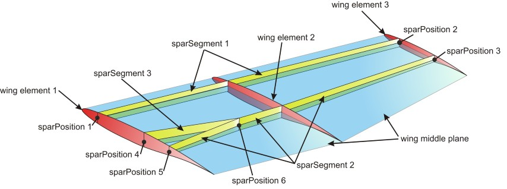

complexType · extension complexBaseType · all
Wing spars
Spar is defined by sparSegments that stretch between multiple sparPositions. The spar definition is very flexible in CPACS. Spars can start and end at any position of the wing, spars can have kinks at any position of the wing and spars can cross each other or merge.
At first the spar points (->sparPositions) have to be defined. Spar points are defined using the relative coordinates eta and xsi. Spar points do lay on wing middle plane.
Two or more spar points are connected to on spar segment (->sparSegments). Each spar segment can be seen as one spar. The spar geometry between two spar points is defined as a direct/straight connection in global coordinate system and not in eta xsi coordinates of the component segment. One spar point can be used by more than one spar, if e.g. two spars are merging. The detailed cross section of the spar is also defined with sparSegments.
Please find below a picture for an example definition of 3 spars in one wing, by using spar position points and spar segments:

| Name | Type | Constraints | Use | Default | Description |
|---|---|---|---|---|---|
@externalDataDirectory | xsd:string | optional | Directory of the external data file | ||
@externalDataNodePath | xsd:string | optional | Path of the node inside the external data file | ||
@externalFileName | xsd:string | optional | Name of the external data file |
| Name | Type | Constraints | OccurrenceHow often the element may appear at this place. The schema writes it as minOccurs and maxOccurs on the declaration. | Default | Description |
|---|---|---|---|---|---|
| allThe children below may appear in any order. Each may appear at most once. | |||||
sparPositions | sparPositionsType | [1..1] required | Positions defining the spars | ||
sparSegments | sparSegmentsType | [1..1] required | Spar segments running through the spar positions | ||
cpacs/vehicles/aircraft/model/wings/wing/componentSegments/componentSegment/structure/sparscpacs/vehicles/aircraft/model/wings/wing/componentSegments/componentSegment/controlSurfaces/leadingEdgeDevices/leadingEdgeDevice/structure/sparscpacs/vehicles/aircraft/model/wings/wing/componentSegments/componentSegment/controlSurfaces/trailingEdgeDevices/trailingEdgeDevice/structure/sparscpacs/vehicles/aircraft/model/wings/wing/componentSegments/componentSegment/controlSurfaces/spoilers/spoiler/structure/sparscpacs/vehicles/rotorcraft/model/wings/wing/componentSegments/componentSegment/structure/sparscpacs/vehicles/rotorcraft/model/wings/wing/componentSegments/componentSegment/controlSurfaces/leadingEdgeDevices/leadingEdgeDevice/structure/sparscpacs/vehicles/rotorcraft/model/wings/wing/componentSegments/componentSegment/controlSurfaces/trailingEdgeDevices/trailingEdgeDevice/structure/sparscpacs/vehicles/rotorcraft/model/wings/wing/componentSegments/componentSegment/controlSurfaces/spoilers/spoiler/structure/sparscpacs/vehicles/rotorcraft/model/rotorBlades/rotorBlade/componentSegments/componentSegment/structure/sparscpacs/vehicles/rotorcraft/model/rotorBlades/rotorBlade/componentSegments/componentSegment/controlSurfaces/leadingEdgeDevices/leadingEdgeDevice/structure/sparscpacs/vehicles/rotorcraft/model/rotorBlades/rotorBlade/componentSegments/componentSegment/controlSurfaces/trailingEdgeDevices/trailingEdgeDevice/structure/sparscpacs/vehicles/rotorcraft/model/rotorBlades/rotorBlade/componentSegments/componentSegment/controlSurfaces/spoilers/spoiler/structure/spars| Type | Name |
|---|---|
wingComponentSegmentStructureType | spars |